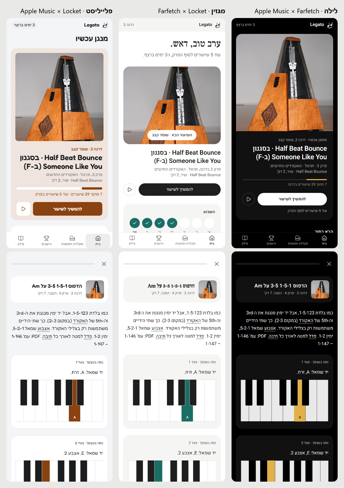
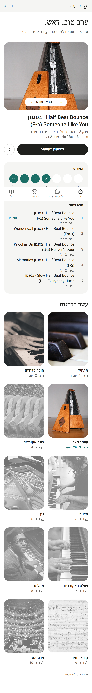
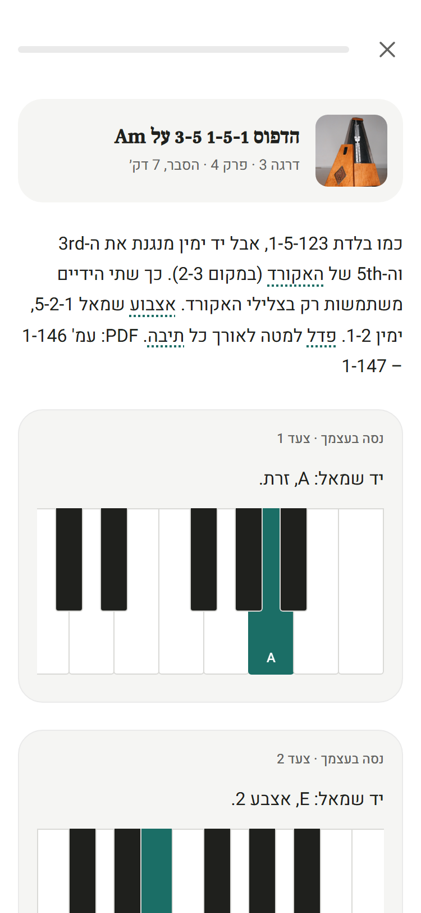
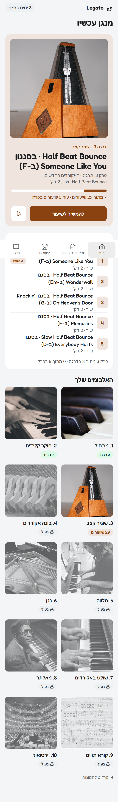
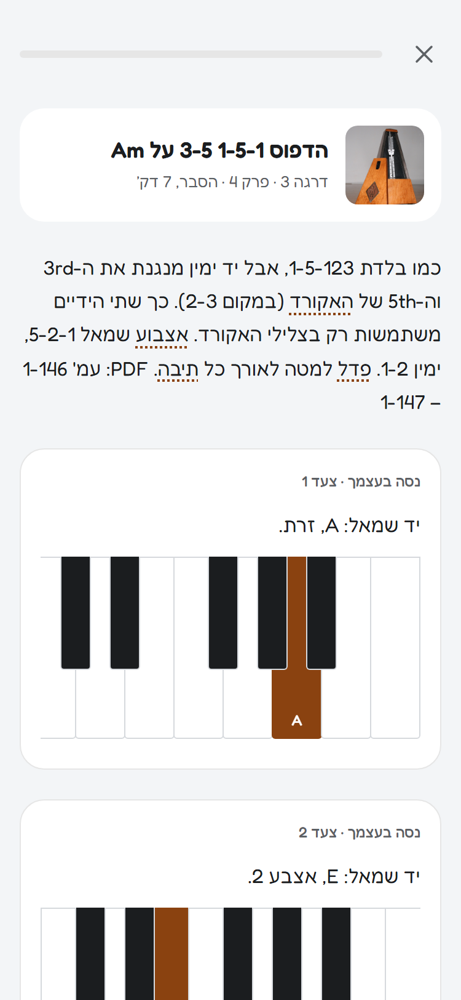

שלושה כיוונים ל-Legato
אותו קורס ואותה התקדמות (דרגה 3, באמצע פרק). לכל כיוון: מסך הבית המלא, ומסך של שיעור.
השוואה
שלושתם זה לצד זה, מסך בית ושיעור

1 · לילה
Apple Music × Farfetch
שחור מלא. כל העטיפות בשחור-לבן, והאלבום שמתנגן עכשיו בצבע. כפתור לבן, ונגיעה של פליז על הקלידים.
מסך הבית

שיעור

2 · מגזין
Farfetch × Locket
דף לבן, ברכה בכתב אלגנטי, השיעור הבא כתמונה עם כיתוב עליה, ושורת "השבוע".
מסך הבית

שיעור

3 · פלייליסט
Apple Music × Locket
כל אלבום בצבע מתוך התמונה שלו, פינות עגולות וגופן עגול. גם השיעור נצבע בצבע של האלבום.
מסך הבית

שיעור

תמונות העטיפה: ארכיונים פתוחים (Wikimedia Commons ועוד), ברישיונות שמתירים שימוש.